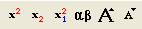

内容 |
セルのフォーマット...
選択したセルのフォーマットを指定します。
このコマンドはスクリプトからアクセスできません。
1. wcellformat
このXファンクションを使って、セルのフォーマットを編集することができます。このXファンクションを使うには、1つ以上のセルを選択し、右クリックして、ショートカットメニューから「セルのフォーマット」を選びます。または、コマンドウィンドウに wcellformat と入力し、ダイアログボックスを開きます。
このダイアログボックスの編集オプション
セル範囲: これは選択したセルの範囲を表示する編集できないテキストボックスです。
リッチテキスト: このチェックボックスは、選択したセルに対してリッチテキストフォーマット(例えば、上付き文字や下付き文字など)を有効にするかどうかを指定します。このチェックボックスにチェックを付けると、テキストの折り返し、浮動、伏せ文字のチェックボックスが自動的に選択され、これらのチェックボックスのチェックを外すことはできません。
このチェックボックスのチェックを外すと、フォーマットボタン はグレーになります。リッチテキストにチェックが付け、指定したせるをダブルクリックして編集モードにし、セルの内容の一部を選択すると、これらのボタンは 色付きに変わります。それらをリッチテキストに設定することができます。
改行可: このチェックボックスは、指定したセルで改行を許可するかどうかを指定します。これにチェックが付いていると、指定したセルをダブルクリックして編集モードにし、Shift+Enterキーを使って、テキストを改行して表示できます。
テキストの折り返し: テキストの長さが、セルの幅を越えると、テキストがセル幅に合うように自動的に折り返されます。 テキストの折り返し チェックボックスが選択されていると、Originは語句の途中で折り返しません。それ以外の場合、語句は中央で切り取られ、折り返します。
浮動：これは、このセルのテキストがセル幅を超えて、右側のセルにオーバーフローします。例えば、Cell[1, 1] に対して浮動、Cell[1, 2] に対して伏せ文字にチェックが付いているとします。Cell[1, 1] のテキストの長さがセル幅より長く、Cell[1, 2]が空白の場合、 Cell[1, 1]のテキストは、下図のようにCell [1, 2]にも表示されます。
省略記号: テキストの長さがセル幅に達すると、テキストを適切に表示するために浮動または折り返しが使われます。しかし、浮動または折り返しのどちらも使われない場合、テキスト全体を完全に表示できないことをユーザに通知するため、省略記号を表示します。
ダイナミック統合: このオプションは、同じテキストを含む隣接するセルを結合するのに使用します。このドロップダウンリストを使って、水平、 垂直 、両方の方向に結合します。
欠損値をブランクで表示: デフォルト設定では、セル内の欠損値は「--」で表示されます。この「--」を非表示にし、欠損値を含むセルを空白にします。
列のデータ型: このドロップダウンリストを使って、セルのフォーマットを選択します。
表示フォーマット: 数値データの表示形式を指定します。このドロップダウンリストは、数値データに対して4つのオプション 十進数: 1000; 指数 1E3; 工学: 1K; 十進数: 1,000を提供しています。これらの機能は、列のプロパティにあるオプションと同じですが、このオプションは列に対して設定するのではなく、セルに対して行うものです。
桁数指定法: 数値データの桁数を指定します。ドロップダウンリストには3つのオプション、デフォルト桁数、小数桁数 = 、有効桁数 =があります。
有効桁数: このオプションは、Digits が 有効桁数のときのみ表示され、有効桁数を指定するのに使用します。
小数桁数:のオプションは、 Digits が 小数桁数 = のときのみ表示され、小数桁数を指定するのに使用します。
適用ボタン: このボタンは、ダイアログを開いたまま、選択したセルへの設定を適用します。
OKボタン: 設定を選択したセルに適用し、ダイアログを閉じます。
キャンセルボタン: ダイアログを閉じ、何もしません。
1. Cell [1, 1] と Cell [1, 2] が同じ値の場合、それらを結合して表示できます。最初に、それらを選択して、ショトカットメニューからセルのフォーマットダイアログを開きます。ダイアログで、ダイナミック統合 を 水平にします。
2. あるセルの値をギリシャ文字に変更します。コマンドウィンドウで wcellformat を実行し、ダイアログを開きます。リッチテキストチェックボックスにチェックを付け、OKボタンをクリックします。指定したセルに戻るには、それをダブルクリックして、内容を選択します。そして、ギリシャ文字ボタンをクリックします。セルの値をギリシャ文字に変更できます。